選擇權操作
主要探討選擇權定價、Greek，以及選擇權權的組合。
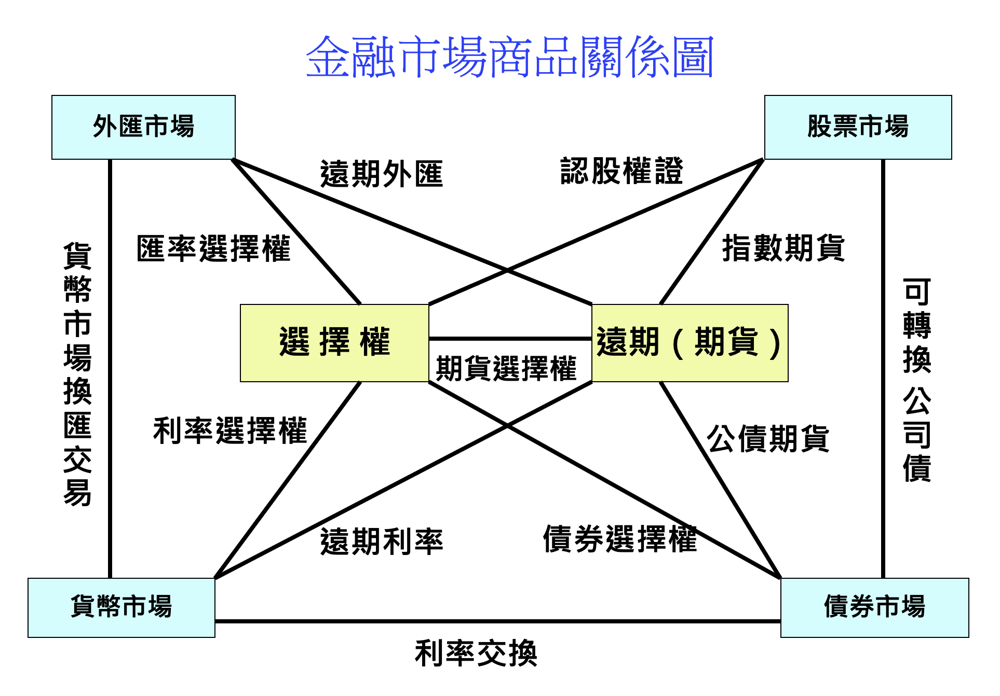
選單書籤列表
一. 選擇權概述
1.選擇權的價值構成
2.選擇權形式
3.影響選擇權價格的主要因素
二. 選擇權定價模型
1.蒙地卡羅模擬法
2.Black-Scholes定價模型
3.二項式期權定價模型
三. 選擇權交易策略
1.買權/賣權基本交易策略
2.主要組合式選擇權交易策略
3.選擇權Greeks中立交易策略
4.波動率微笑曲線
四. 選擇權Greeks
1.選擇權Greeks探討
2.Python 圖型套件
3. 波動率交易策略
五. 全球主要期貨交易所
1.
2.
3.
–>
====================================
項目一. 選擇權概述
回到選單書籤列表
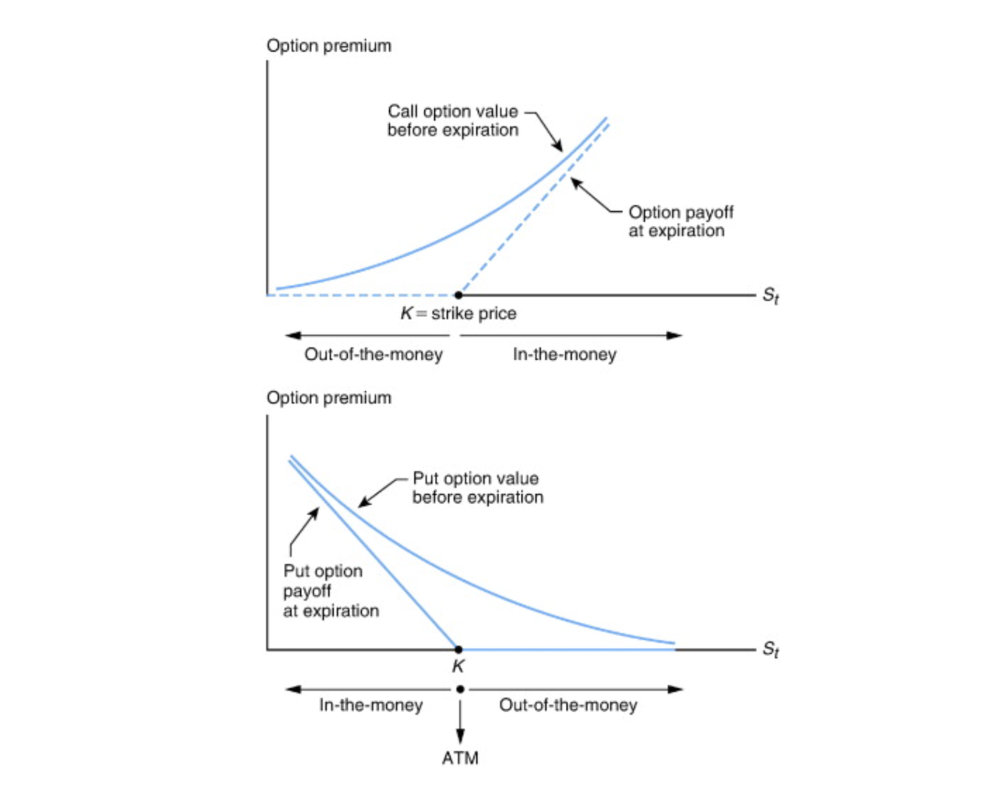
1. 選擇權的價值構成
＊ 內在價值
✓ 選擇權當前的實際價值，即履約價格與標的資產價格之間的差額：
- 買權的內在價值：Max(標的資產價格−履約價格,0)。
- 賣權的內在價值：Max(履約價格−標的資產價格,0)。
✓ 依現貨價格與履約價格之不同，選擇權可分為：
- 價內(in the money , ITM)選擇權： 內在價值 > 0。
- 價平(at the money , ATM)選擇權： 內在價值 ＝ 0。
- 價外(out of the money , OTM)選擇權： 內在價值 < 0。
✓ 愈價內的選擇權契約，其權利金愈高；反之，愈價外的選擇權契約，其權利金愈低。
＊ 時間價值
✓ 選擇權到期前的潛在價值，反映了標的資產價格在到期前可能發生變動的不確定性。
✓ 時間價值隨著到期日的接近而遞減,到期日當天時間價值為0。
✓ 影響時間價值取因素(參考以下選擇權Greeks內容)：
- 選擇權到期日時間愈長，時間價值愈高。
- 標的資產價格波動率愈大，時間價值愈高。
- 執行價與標的資產價格的差距愈大，時間價值愈高。
- 無風險利率越高，時間價值越高。
2. 選擇權形式
＊ 歐式選擇權
- 需在到期時，才可進行履約。
＊ 美式選擇權
- 在到期日之前任何時點，買方皆可要求履約。
- 美式選擇權的權利金通常高於歐式選擇權，因為任何時間都能交割。
＊ 亞式選擇權
- 標的的結算價格以約定的一段期間內的平均價格計算，常見於商品期權。
3. 影響選擇權價格的主要因素
＊ 標的資產價格_V (Underlying Asset Price)
- 標的資產價格是選擇權價格最重要的決定因素。
- 對於買權，標的資產價格上升會使期權價格上升；對於賣權，標的資產價格下降會使期權價格上升。
＊ 履約價格_S (Strike Price)
- 履約價格越低，買權的價值越高；履約價格越高，賣權的價值越高。
＊ 到期日_T (Time to Expiration)
- 距到期日越近，期權的時間價值越低，因此期權價格也會下降。
- 對於同一標的資產和履約價格，到期日越遠的期權價格通常會更高。
＊ 波動率_V (Volatility)
- 歷史波動率（Historical Volatility）
用過去一段時間內股價標準差計算的波動率，衡量過去特定時間段內投資標的價格變化的程度。
- 隱含波動率（Implied Volatility）
基於選擇權未來波動率估計，反映了市場對某標的未來波動的看法，隨著市場情緒變化，隱含波動率會上升或下降。
- 標的資產價格的波動率越大，期權的時間價值越高，期權價格也會更高。
- 歷史波動率用於評估現在價格是否合理，而隱含波動率是市場對未來波動的看法，透過選權權價格變化顯示市場對未來標的價格波動預測的看法。
＊ 無風險利率_R (Risk-Free Interest Rate)
- 無風險利率越高，期權的時間價值越高，期權價格也會更高。
＊ 股息_D (Dividends)
- 如果標的資產支付股息，則買權的價格會下降，賣權的價格會上升。
項目二. 選擇權定價模型
1. 蒙地卡羅模擬法
模擬和預測基於幾何布朗運動的資產價格路徑。
＊ 主要應用
✓ 金融衍生性商品定價：蒙地卡羅模擬法常用於定價期權等金融衍生品，其中股價路徑的生成基於幾何布朗運動(GBM)模型。
✓ 風險管理：可以評估投資組合的風險，通過模擬不同市場情境下的資產價格變化，提供更全面的風險評估和預測。
＊ 模型基礎
✓ 隨機抽樣
隨機抽樣：蒙地卡羅模擬法利用隨機數生成來模擬多次試驗，根據試驗結果來計算所需統計量或預測值對於資產價格的預測。
✓ 模擬過程
1). 初始化：設定初始股價。
2). 隨機生成：使用正態分佈生成隨機數，模擬每個時間步驟點的價格變化。
3). 計算路徑：根據 GBM 公式計算每個時間步的股價，生成多條價格路徑。
4). 統計分析：對所有模擬結果進行統計分析，以計算預測的期望值、風險評估等。
＊ 幾何布朗運動（Geometric Brownian Motion, GBM）
✓ 常用於金融數學的模型，用來描述資產價格的變動。
此模型為許多金融衍生品定價(如：Black-Scholes模型)提供理論基礎，且在風險管理和投資決策中廣泛應用。
✓ 公式：
$$ S(𝑡)=S(𝘰)⋅e^{(μ − \frac{1}{2}σ^2)𝑡+σ\sqrt{d_𝑡}⋅Z_𝑡} $$
S(𝑡)：時間𝑡的股價、S(𝘰)：初始股價。
μ：股價的期望回報率。
σ：股價的波動率。
d𝑡：單位時間變化。
Z𝑡：～N(0,1)標準常態分配。
- 股價𝑆(𝑡)在時間𝑡的變化可以表示為：dS(𝑡) = μ•S(𝑡)•d𝑡 + σ•S(𝑡)•dW(𝑡)
✦ 漂移項μ•S(𝑡)•d𝑡：表示股價隨時間的平均增長。
✦ 擾動項σ•S(𝑡)•dW(𝑡)：表示股價的隨機波動，反映了市場的不確定性。
dW(𝑡)：維納過程(Wiener process)，一種連續時間隨機過程，具有二項特性：E﹝dW(𝑡) = 及 Var﹝dW(𝑡)〕= d𝑡 。
＊ 模擬過程
✓ 以μ=0.1,σ=0.15模擬15條股價1,000日變化路徑。
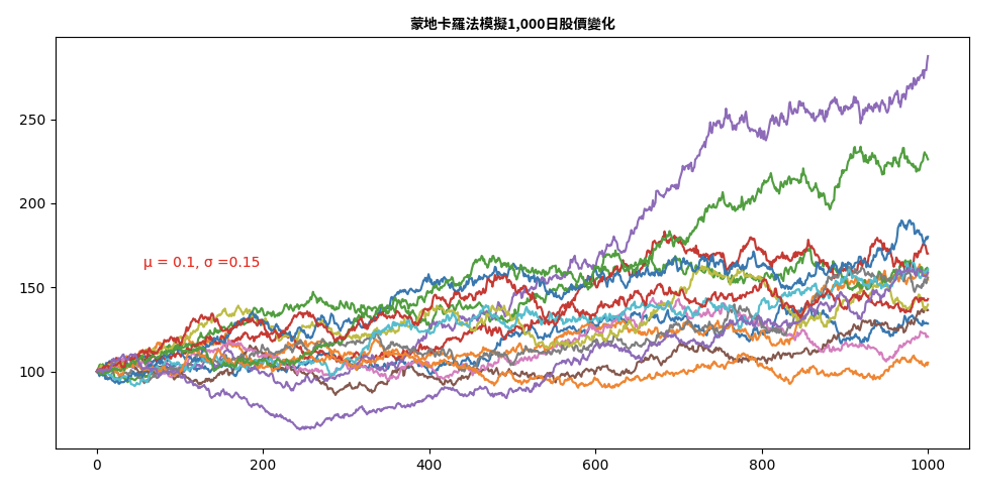
✓ 將其中一條股價變化路徑的日報酬實際分配與常態分配比較。
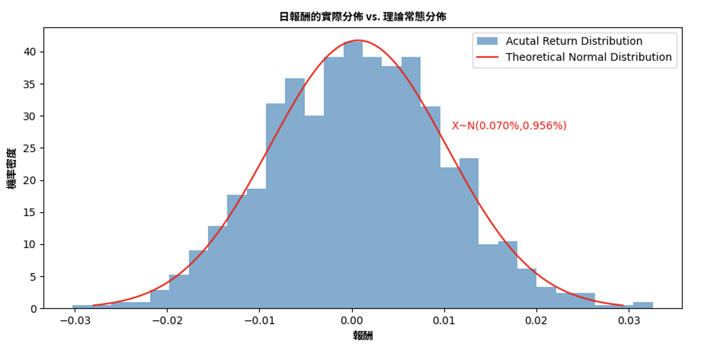
2. Black-Scholes定價模型
由費雪·布萊克(Fischer Black)和麥倫·舒爾斯(Myron Scholes)於1973年提出，後來由羅伯特·墨頓(Robert Merton)進一步完善。
＊ 主要假設
實際應用中，下述假設可能不完全成立，需要進行調整和修正:
1). 市場無摩擦：不存在交易成本和稅收，即買賣選擇權和標的資產不會產生額外費用。
2). 無套利機會：市場中不存在無風險套利的機會，即不能通過買賣期權和標的資產獲得無風險利潤。
3). 股票價格服從幾何布朗運動：股票價格隨機漫步，且對數收益率服從常態分佈，即價格變動是連續且隨機的。
4). 無風險利率恒定：無風險利率在期權有效期內保持不變，不會隨時間波動。
5). 股票不支付股利：在期權有效期內，標的股票不支付股利，以簡化模型計算。
6). 歐式期權：期權只能在到期日行使。
＊ 主要公式
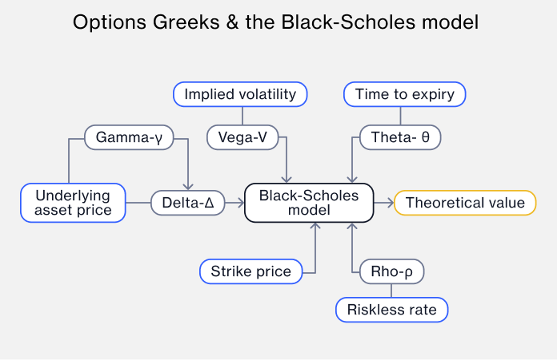
- 𝐶(St,t), P(St,t) : 第t日的買、賣權理論價格。
- St, K : 第t日標的物價格與履約價格。
- T, t : 選擇權時間長度與第t天。
- σ : 市場隱含波動率；若採歷史報酬波動度，可用過去252日的報酬來計算波動率。
- r : 無風險利率。
- N( ) : 標準常態分配的累積機率分佈函數。
買賣權平價關係 Put Call Parity : C + PV(x) = P + S𝘰 ，即 P = C + PV(x) - S𝘰
- PV(x) : 執行價之現金現值
$$ 𝐶{(\mit{S}_t,t)} = {\mit{S}_t}{N(d_1)} - 𝐾e^{-r(𝑇-t)}{N(d_2)} $$
$$ 𝑃{(\mit{S}_t,t)} = 𝐾e^{-r(𝑇-t)}{N(-d_2)} - {\mit{S}_t}{N(-d_1)} $$
$$ d_1 = \frac{{ln(\frac{S_t}{𝐾})}+(r+\frac{σ^2}{2})(𝑇-t)}{σ\sqrt{𝑇-t}} $$
$$ d_2 = d_1 - σ\sqrt{T-t} $$
3. 二項式選擇權定價模型(Binomial Option Pricing Model)
由約翰·考克斯（John Carrington Cox）、斯蒂芬·羅斯（Stephen A. Ross）和馬克·魯賓斯坦（Mark Rubinstein）於1979年提出12。
＊基本概念
- 一種靈活且有效的選擇權定價方法，特別適合於美式選擇權的評估。通過構建價格樹，可以詳細分析標的資產價格的變化及其對選擇權價值的影響。
- 離散時間模型：將選擇權的有效期期間分成多個小時間步驟節點，每個時間段內股價只有兩種可能的變動方向：上漲或下跌。
- 價格樹建立：在每個步驟節點中，標的資產的價格可以上升或下降，形成一個樹狀結構。
- 計算每個節點的期權價值：從選擇權的權到期日開始，逐步向前計算每個節點的期權價值，直到當前時間。
- 風險中性定價：假設市場是無風險的，計算在每個節點的期望值。
- 貼現計算：使用無風險利率將未來的期權價值貼現到當前時間。
＊主要特點
- 適用於美式期權：能夠處理美式選擇權，因為可以在每個節點執行選擇權，可以靈活地調整時間步數，以提高準確性。
- 計算量隨著步數增加而增加，對於大量步驟的情況耗費運算資源，另外需假設市場無風險，不符合實際情況。
＊模型推導
$$S_0 ：當前標的資產價格。 𝐾：執行價格。 𝑇：到期時間。 𝑟：無風險利率。 σ：標的資產的波動率。 𝑛：時間步數。$$ $$𝑢=𝑒^{σ{\sqrt{𝑡}}} , 𝑑=\frac{1}{𝑢}=𝑒^{-σ{\sqrt{𝑡}}} , 標的資產上漲𝑢或下跌𝑑。 $$ $$𝑃＝\frac{𝑒^{{𝑟Δ𝑡}}-𝑑}{𝑢-𝑑} , 標的資產漲的機率。$$ - $$ 𝐶_{𝑡-Δ𝑡,𝑖} = 𝑒^{-𝑟Δ𝑡}({𝑃}⋅𝐶_{𝑡,𝑖+1}+(1-𝑃)⋅𝐶_{𝑡,𝑖-1}) , 𝐶_{𝑡,𝑖}是為第i個節點在時間𝑡的價值。 $$
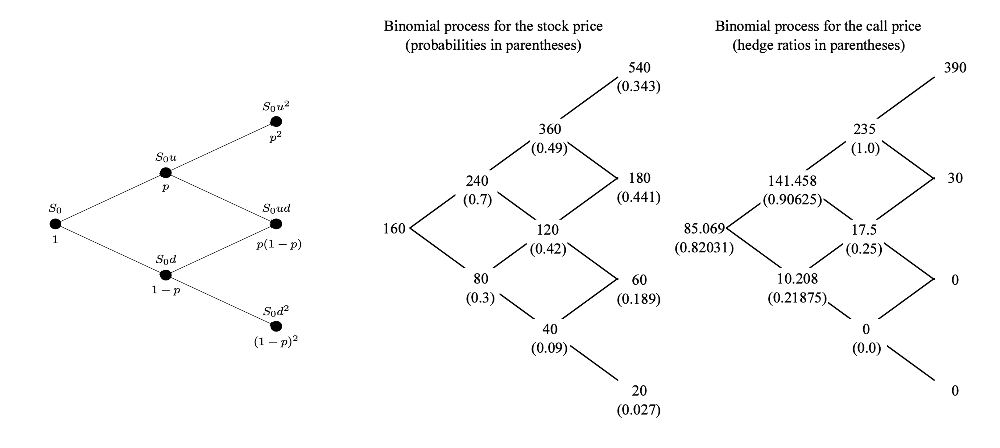
參考資料： 呂育道教授＿Option Pricing Models
項目三. 選擇權交易策略
1. 買權、賣權的基本交易策略
＊ 基本型
✓ 陽春型買權(Vanilla Call)
✓ 陽春型賣權(Vanilla Put)
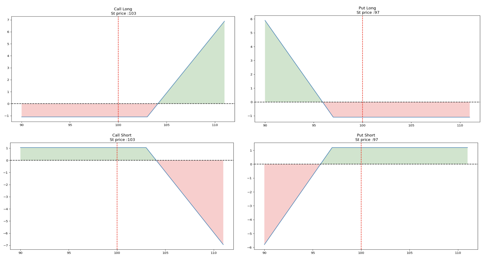
＊ 組合型
✓ 跨式策略(Straddle)
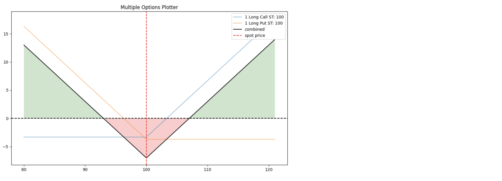
✓ 勒式策略(Strangle)
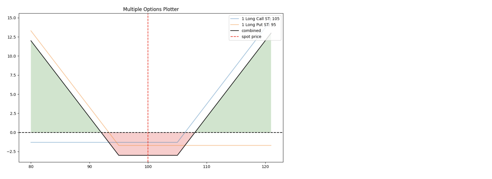
✓ 蝶式策略(Butterfly)
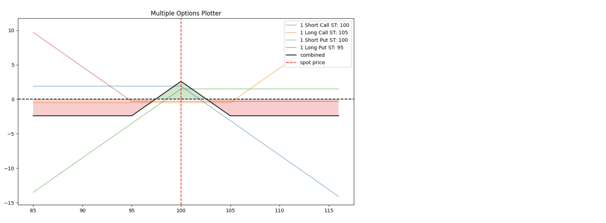
✓ 鐵兀鷹(Iron Condor)
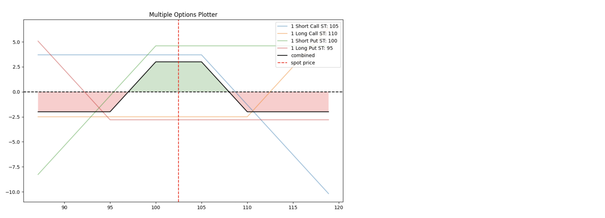
✓ 固定波幅策略(collar)，又稱為Risk Reversal、Range Forward，亦可組成零成本的Zero Cost Collar；
藉由選擇權買賣組合，可在支付少量權利金或不支付權利金條件下，於一定範圍內，選擇權部位損益為O。
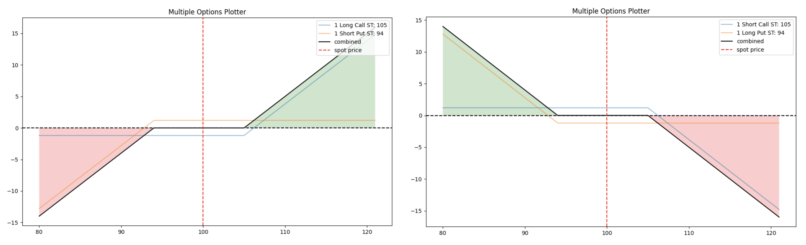
✓ 海鷗策略(Seagull)，又稱為3-Way Collar；
藉由賣出2個選擇權及買入1個選擇權，壓低風險對沖成本，惟獲利有上限。
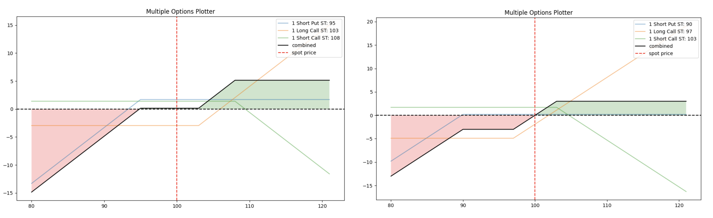
＊ 新奇型(Exotic)
✓ 數位選擇權(Digital Option)
買方報償為一特定金額或某，標的資產或兩者皆無的契約。
✓ 界限選擇權(Barrier Option)
陽春型選擇權額外增加一個特定標的價格(或指標)的門檻，並依照是否碰觸到門檻來決定選擇權的生效與失效型。
- 界限條件：當資產價格觸及或超過這個界限時，選擇權的有效性會改變。
- 觸發類型：
1).觸發型(Knock-In)：當資產價格觸及其中一個界限時，選擇權開始生效。
2).失效型(Knock-Out)：當資產價格觸及其中一個界限時，選擇權失效。
- 三種追蹤觸界時段類型：
1).美式(American Type)：允許持有者在到期日(含)之前的任何時間觸發選擇權的界限條件。
2).窗口式(Window Type)：在特定的時間窗口內有效，只有在這段時間內觸及界限才能生效或失效。
3).歐式(European Type)：美只能在到期日當天檢查是否觸及界限。
- 成本效益：成本效益：由於其結構，單界限選擇權的價格通常比傳統選擇權便宜，因為它們的風險和潛在收益是受限的。
✓ 數位選擇權(Digital Option)
當標的資產價格達到執行價格時，數位選擇權買方獲得固定金額報酬(現金或資產)。
✓ 後付選擇權(Pay-Later Option)，又稱條件選擇權(Contingent Option)、零權利金選擇權(Zero-premium Option)
買進選擇權時不需支付權利金，到期時，若選擇權為價內，選擇權買方才須支付權利金。若到期時處於價外，不須支付任何權利金。
✓ 延遲付款選擇權(Deferred Payment Option)，又稱波士頓選擇權(Boston Option)
與後付選擇權相似，惟選擇權到期時，不論選擇權是處於價內或是價外的狀態，都必須支付權利金。
✓ 百慕達選擇權(Bermuda Option)，又稱準美式選擇權(Quasi-American Option)、中大西洋選擇權(Mid-Atlantic Option)
選擇權買方可在到期日前幾個特定時點或期間，以執行價格買進或賣出標的資產，履約時間，執行價格亦可隨著時間而調整。
✓ 複合選擇權(Compound Option)
選擇權的選擇權，複式選擇權之標的資產為另一個選擇權，因此會有2個執行價格與2個到期日。
✓ 組合式選擇權(Basket Option)，又稱一籃子選擇權
涵蓋不同投資標的，並以投資組合價格的平均值作為標的資產價格。
✓ 彩虹選擇權(Rainbow Option)，又稱稱多重資產選擇權(Multi-Asset Option)
收益取決於兩種或兩種以上標的資產的選擇權，到期時，可依據事先約定的情況，選擇其中一種標的資產執行。
✓ 喜馬拉雅式選擇權(Himalayan Option)
具有多個到期執行日、及相同或多種不同資產標的執行價格的選擇權，隨時間依次進行交割。
✓ 巴黎式選擇權(Parisian Type Option)
在約定期間內，目標資產價格需連續符合特定條件，選擇權才會生效。
✓ 次方選擇權(Power Option)
以標的資產價格次方來計算履約價值的選擇權，潛在獲利機率高，其要求的權利金也較高。
✓ 價差選擇權(Spread Option)
以2種標的資產之價差作為標的資產的價格之選擇權。
✓ 遠期生效選擇權(Forward Start Option)，又稱未來生效選擇權(Delayed Option)
以選擇權為標的之遠期契約，選擇權買方須先支付權利金，待未來特定時點契約才會生效，且執行價格多設為標的資產在契約生效日時價格(價平）。
2. 主要組合式選擇權交易策略
＊ 交易策略擬定
- 規避風險：對已持有的投資部位，透過選擇權進行避險。
- 獲取報酬：根據對價格走勢的熟捻判斷，針對可能發展的多頭、空頭、盤整的走勢，透過選擇權進行獲利。
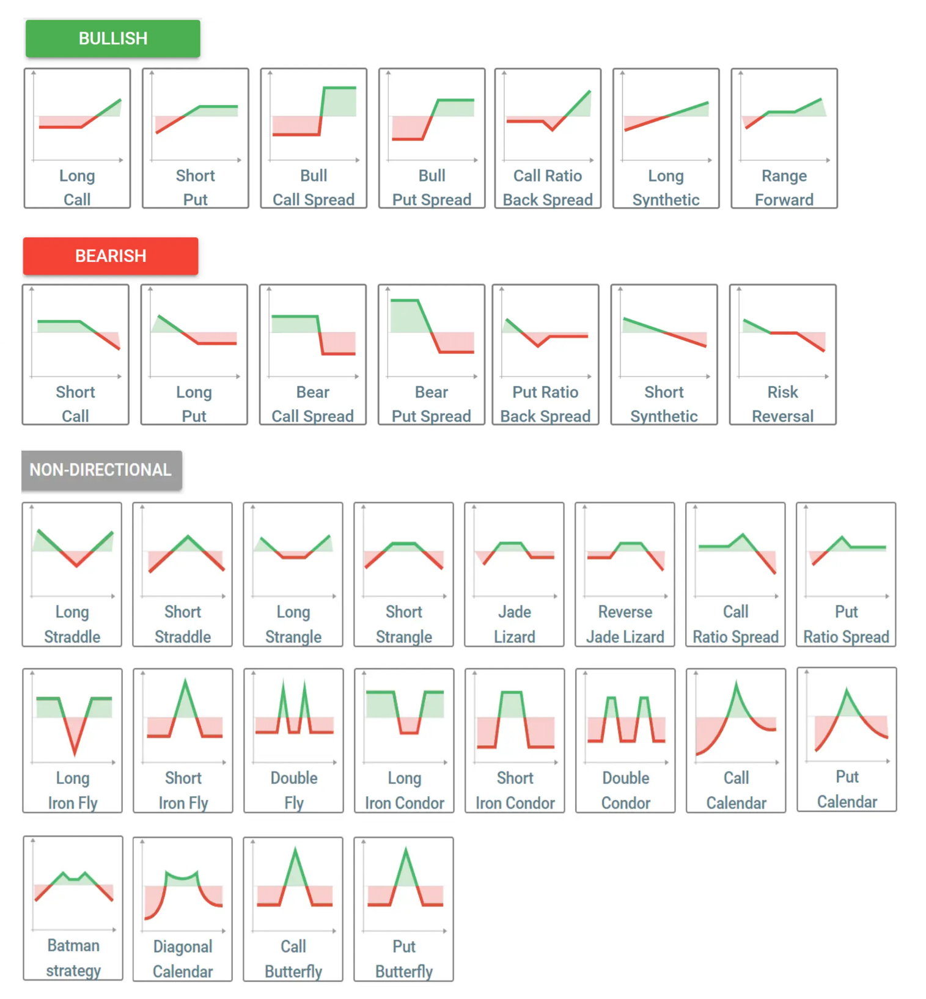
3. 選擇權Greeks中立交易策略
＊ Delta中立（Delta Neutral）
主要用於對沖標的資產價格的小幅波動，適合短期內保持投資組合穩定。
- 一種風險管理策略，旨在使投資組合的Delta值接近零，即投資組合的價值對標的資產價格的小幅變動不敏感。
- 通過買入或賣出標的資產或其他選擇權來調整投資組合總Delta值，使其接近零。
＊ Gamma中立（Gamma Neutral）
進一步對沖Delta的變動，適合在市場波動較大時保持投資組合的穩定。
- 一種更進階的風險管理策略，旨在使投資組合的Gamma值接近零，即投資組合的Delta值對標的資產價格變動不敏感。
- Gamma中立策略通過買入或賣出選擇權來調整投資組合的總Gamma值，使其接近零。
＊ Vega中立（Vega Neutral）
- 對沖標的資產隱含波動率的變化，旨在使投資組合對波動率變化不敏感，從而減少波動率對期權價格的影響。
- 計算每個選擇權部位的Vega值，透過買入和賣出不同的後則權來平衡總Vega值，使其接近零，隨著市場條件的變化，定期監控和調整投資組合Vega值。
具體策略:
1).熊市看漲價差 (Bear Call Spread)：賣出一個Call，同時買入一個相同標的資產但執行價更高的Call。
2).熊市看跌價差 (Bear Put Spread)：買入一個Put，同時賣出一個相同標的資產但執行價更低的Put。
3).牛市看漲價差 (Bull Call Spread)：買入一個Call，同時賣出一個相同標的資產但執行價更高的Call。
4).牛市看跌價差 (Bull Put Spread)：賣出一個Put，同時買入一個相同標的資產但執行價更低的Put。
5).合成多頭 (Synthetic Long Stock, or Synthetic Forward)：買入一個Call，同時賣出一個Put，兩者具有相同的執行價和到期日。
4. 波動率微笑曲線（Volatility Smile）
期權隱含波動率與執行價之間的關係曲線，通常呈現中間低、兩邊高的形狀，像是一個微笑。
買權及賣權對應不同執行價的微笑曲線，未必重疊，要看供需及市場預期決定。
✓ 波動率偏斜（Volatility Skew）
隱含波動率隨執行價的變化而呈現不對稱的形狀，通常是隨著行權價格的上升或下降而單邊上升。
主要成因：
- 市場預期：投資者對未來市場走勢的預期不同，認為市場更有可能出現大幅下跌或上漲某方力量更大，進而影響不同執行價的隱含波動率。
- 避險需求：對不同執行價的選擇權需求不同，尤其在市場波動較大時，投資者對買權或賣權單方面需求大增，推升隱含波動率。
✓ 波動率微笑變異（Volatility Smirk）
類似波動率微笑，但一側的隱含波動率顯著高於另一側，通常是看賣權的隱含波動率高於買權。
主要成因：
- 市場情緒：投資者對市場下跌的恐慌情緒更強烈，導致賣權的需求及隱含波動率上升。
- 避險策略：機構投資者和對沖基金可能更傾向於使用賣權來對沖風險，大幅推升賣權的隱含波動率。
- 上述屬於選擇權的隱含波動率v.s.執行價變化的垂直偏斜(Vertical Skew)的波動率微笑曲線。
✓ 時間偏斜（Time Skew）
不同到期日的選擇權的隱含波動率不同，通常是短期選擇權的隱含波動率高於長期選擇權。
主要成因：
- 事件風險：短期內可能發生的重大事件（如財報發布、經濟數據公佈等）會影響短期期權隱含波動率。
- 市場不確定性：短期內市場的不確定性較高，投資者對短期期權的需求增加，推升期權隱含波動率。
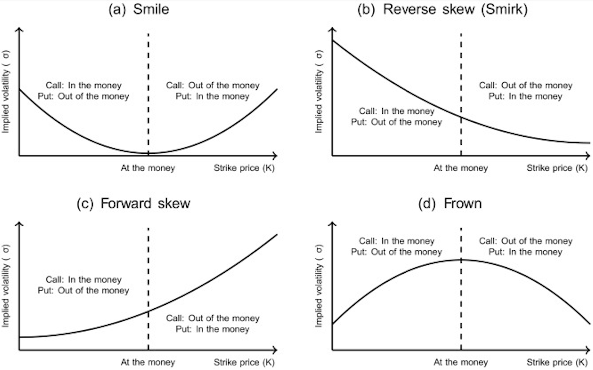
項目四. 選擇權Greeks
| Greeks | Call | Put | Call Spread | Put Spread | Seagull | Strangle | Straddle | Butterfly | Iron Condor |
|---|---|---|---|---|---|---|---|---|---|
| Delta | 十 | ㄧ | 十 | ㄧ | 0 | 0 | |||
| Gamma | 十 | 十 | 十(小) | 十(小) | 十 | 十 | |||
| Theta | ㄧ | ㄧ | ㄧ(小) | ㄧ(小) | ㄧ | ㄧ | |||
| Vega | 十 | 十 | 十(小) | 十(小) | 十 | 十 | |||
| 選擇權組合 |
1. 選擇權Greeks探討
＊ Delta(Δ)
- 選擇權價值對股價變動的敏感度。
- Delta值範圍為-1.00和1.00。買權的Delta為正值，賣權Delta為負值，因標的資產價格與選擇價值存為負相關。
- 價內買權的Delta值>0.5、價平買權的Delta值=0.5、價內買權的Delta值<0.5，e.g.,如果買權的Delta=0.2，當標的資產價格上漲1元時，買權價值上漲0.2。
- 深度價內的選擇權Delta接近-1.00或1.00，此時的時間價值趨近為0。
- 除了標的價格影響Delta外，越接近到期日，Detla則會上升。
- 依據常態分配，delta=0.2的買權期滿時，有20%會落在價內，而delta=0.95的買權期滿時，有95%會落在價內。
$$ Δ_{call} = \frac{\partial 𝐶}{\partial {\mit{S}}} =N(d_{ 1}) $$
$$ Δ_{put} = \frac{\partial P}{\partial {\mit{S}}} =N(d_{ 1}) -1 $$


＊ Gamma(Γ)
- 衡量選擇權非線性的程度，即Delta的變化速率。即做對了幫你加碼，做錯了幫你減碼 → 付出較多的時間價值。
- 價平選擇權的Gamma值最高，而深度價內及價外的選擇權的Gamma最低。
- 二個相同Detla的選擇權，但Gamma值不同，較高gammga值的選擇權帶有較高風險，不立整體選擇權部位風險穩定平衡。
- 簡言之，Delta代表選擇權在到期時獲利的機率，Gamma則代表這一機率隨時間變化的穩定性。
- 一個高Gamma值、Delta=0.75選擇權，相較低Gamma但相同Delta值的選擇權，於到期時獲利機率較低。
- 深度價內或價外的選擇權Gamma值最低，價平時最高。
- $$ Γ_{call} = Γ_{put} = \frac{\partial ^2C}{\partial {\mit{ S ^2}}} = \frac{\partial ^2P}{\partial {\mit{ S ^2}}} = \frac{N’(d_{ 1})}{Sσ\sqrt{T-t}} $$

＊ Vega(v)
- 衡量標的資產價格隱含波動率對選擇權價值的變動，側重於對未來波動率預期的變化。
- 波動率越高，期權越貴，因觸及執行價的可能性越大。
- 選擇權賣方受益於隱含波動率的下降，但對期權買方來說正好相反。
- 多頭期權有正的 vega，而空頭期權有負的 vega。
- 即使標的資產價格沒有變動，但隱含波動率的變動會導致Vege值變化。
- Vega隨著標的資產的快速移動而增加。隨著期權到期日的臨近而下降。
- $$ v_{call} = v_{put} = \frac{\partial C}{\partial σ} = \frac{\partial P}{\partial σ} = S \sqrt{T-t} {N’( d _1)} $$

＊ Theta(Θ)
- 持有選擇權所需要的時間價值減損成本，即衡量選擇權價值隨時間變化的衰減速度，故Theta值始終為負值。
- 距到期日較遠時，Theta變化平滑或趨近線性，當接近到期日時則變為陡峭，因資產價格變動獲利機率攤到每單位時間變大。
- 當接近到期日時，深度價內及深度價外的選擇權的時間價值非常低，Theta趨近0。
- 價外選擇權若有較高的隱含波動率，Theta值通常較高。
- $$ Θ_{call} = \frac{\partial C}{\partial(T-t)} = - \frac{S N’(d_{ 1}) σ}{ 2\sqrt{T-t} } - rKe^{-r(T-t)} N(d_{ 2}) $$
- $$ Θ_{put} = \frac{\partial P}{\partial(T-t)} = - \frac{S N’(d_{ 1}) σ}{ 2\sqrt{T-t} } + rKe^{-r(T-t)} N(-d_{ 2}) $$

＊ Rho(ρ)
- 利率變動對選擇權價值的變動，衡量期權價格對無風險利率變化敏感度，即當無風險利率變化1個基點(0.01%)時，期權價格的變化量。
- 當標的資產價格上升時，買權的Rho亦會增加，因標的資產價格的上升，買權的內在價值增加，對利率變化的敏感度也隨之上升，賣權則相反。
- 較長天期的選擇權權具有較高的Rho，因其時間價值較高，對利率變化的影響更為明顯。
- 較高利率環境中，買權的Rho可能會更高，因投資者在未來的現金流折現時會考慮更高的利率。
- 舉例一個買權的 rho = 0.05，價格 1.25 美元，如果利率上升 1%，假設其他條件相同，選擇權價值來到1.30 美元。
- $$ ρ_{call} = \frac{\partial C}{\partial r} = K(T-t)e^{-r(T-t)} N(d_{ 2}) $$
- $$ ρ_{put} = \frac{\partial P}{\partial r} = -K(T-t)e^{-r(T-t)} N(d_{ 2}) $$

＊ 其他Greeks，參考 Wiki
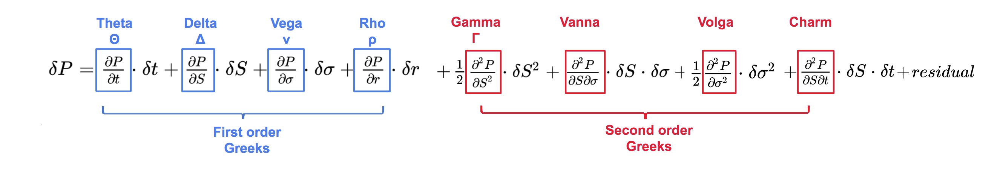
2. Python 圖型套件
import numpy as np
from scipy.stats import norm
import pandas as pd
import matplotlib.pyplot as plt
from matplotlib import cm
from mpl_toolkits.mplot3d import Axes3D
from mpl_toolkits.mplot3d import art3d
from matplotlib.animation import FuncAnimation